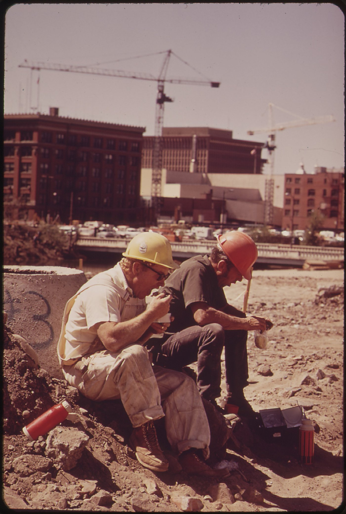

AQShda mehnat huquqlari: minimal ish haqi, ortiqcha ish haqi va ish joyidagi himoya
AQShda federal qonun har bir ishchiga — hujjati bor-yoʻqligidan qatʼi nazar — minimal ish haqi, 40 soatdan ortigʻiga ortiqcha haq va xavfsiz ish joyini kafolatlaydi. Mana bu huquqlar qanday ishlaydi va buzilsa qayerga murojaat qilinadi.

AQShda ish haqi va ish vaqti boʻyicha asosiy huquqlar 1938-yilda qabul qilingan «Adolatli mehnat standartlari toʻgʻrisida»gi qonun (Fair Labor Standards Act, FLSA) bilan belgilanadi. U minimal ish haqi, ortiqcha ish haqi (overtime), hisob yuritish va yoshlar mehnati standartlarini oʻrnatadi hamda xususiy sektorda va davlat idoralarida ishlovchilarga tatbiq etiladi. Qonunni Mehnat vazirligining Ish haqi va ish vaqti boʻlimi (Wage and Hour Division, WHD) nazorat qiladi (Manba: U.S. Department of Labor — Wages and the Fair Labor Standards Act; DOL — Worker Rights).
Minimal ish haqi
Federal minimal ish haqi 2009-yil 24-iyuldan beri soatiga 7,25 dollarni tashkil etadi. Biroq koʻplab shtatlar va shaharlar undan yuqori minimal ish haqini belgilagan va ishchiga shu holatda amal qiladigan eng yuqori stavka toʻlanishi shart. Masalan, Kaliforniyada shtat boʻyicha minimal ish haqi 2026-yil 1-yanvardan soatiga 16,90 dollar; ayrim shaharlarda esa u 19 dollar yoki undan yuqori. «Choychaqa» (tips) oladigan xodimlar uchun ish beruvchi soatiga kamida 2,13 dollar naqd toʻlashi mumkin, lekin naqd haq va choychaqa yigʻindisi federal 7,25 dollarga yetishi shart — aks holda farqni ish beruvchi qoplaydi (Manba: DOL — Minimum Wage; California DIR — Minimum Wage).
Ortiqcha ish haqi (overtime)
FLSAga koʻra, qamrab olingan va «istisno qilinmagan» (nonexempt) xodimlarga bir ish haftasida 40 soatdan ortiq ishlagan har bir soat uchun oddiy stavkasining kamida bir yarim baravari (1,5x) miqdorida haq toʻlanishi shart. Ayrim lavozimlar — masalan, maʼlum darajadagi maosh oladigan boshqaruv, maʼmuriy yoki kasbiy xodimlar — «istisno qilingan» (exempt) hisoblanib, ularga ortiqcha ish haqi tegishli boʻlmasligi mumkin. Istisno maqomi lavozim nomi bilan emas, haqiqiy ish vazifalari va maosh darajasi bilan belgilanadi (Manba: DOL — Wages and the FLSA; Congressional Research Service — FLSA Overview).

Immigratsiya maqomidan qatʼi nazar himoya
Federal mehnat qonunining muhim tamoyili — bu himoyalar barcha ishchilarga tegishli ekani. Mehnat vazirligi qonunni ishchining immigratsiya maqomiga qaramasdan qoʻllaydi: minimal ish haqi, ortiqcha ish haqi, hisob yuritish va tazyiq (retaliation)dan himoya hujjatli yoki hujjatsiz, fuqaro yoki fuqaro boʻlmagan har bir ishchiga kafolatlanadi. Ish beruvchi haqiqatda bajarilgan ish uchun minimal yoki ortiqcha haq toʻlamaslik uchun ishchining maqomidan foydalana olmaydi (Manba: DOL — Worker Rights; U.S. DOL Wage and Hour Division).
Ish joyi xavfsizligi (OSHA)
1970-yilgi «Mehnat xavfsizligi va sogʻligʻi toʻgʻrisida»gi qonun asosida tashkil etilgan OSHA (Occupational Safety and Health Administration) har bir ishchining xavfsiz ish joyiga boʻlgan huquqini taʼminlaydi. Ishchi xavfli sharoitlar haqida shikoyat berish, tekshiruv talab qilish, xavf va jarohatlar haqida xabar berish huquqiga ega; ish beruvchi bu huquqlardan foydalangani uchun xodimni jazolasa yoki ishdan boʻshatsa, bu qonunga zid. OSHA himoyasi ham immigratsiya maqomiga bogʻliq emas (Manba: OSHA — Workers' Rights; DOL).
Shartnoma, hisob va yakuniy haq
Ish beruvchi ishlagan soatlaringiz va ish haqingiz boʻyicha hisob yuritishi hamda sizga ish haqi varaqasini (pay stub) berishi lozim. Yakuniy hisob-kitob — ishdan boʻshaganda oxirgi maoshning qachon toʻlanishi — shtat qonunlariga qarab farq qiladi. Baʼzi shtatlar kasallik taʼtili, tanaffuslar yoki ish haqini oʻgʻirlash (wage theft)dan himoya boʻyicha federal darajadan kuchliroq qoidalarni belgilaydi. Shuning uchun oʻz shtatingiz mehnat idorasi qoidalarini ham tekshirib koʻrish foydali (Manba: DOL — State Labor Offices; DOL — Worker Rights).
Huquqingiz buzilsa qayerga murojaat qilinadi
Minimal yoki ortiqcha ish haqi toʻlanmagan boʻlsa, Mehnat vazirligining Ish haqi va ish vaqti boʻlimiga (WHD) shikoyat berish mumkin — murojaat maxfiy saqlanadi va immigratsiya maqomi soʻralmaydi. Ish joyi xavfsizligi boʻyicha shikoyat OSHAga beriladi. Koʻplab shtatlarda mahalliy mehnat idoralari va bepul yuridik yordam markazlari ham ishchilarga koʻmaklashadi. Qonun ish beruvchiga shikoyat bergani uchun xodimni jazolashni taqiqlaydi. Bu maʼlumot umumiy xususiyatga ega; aniq holatda tegishli idora yoki advokatga murojaat qiling (Manba: DOL — How to File a Complaint; OSHA).